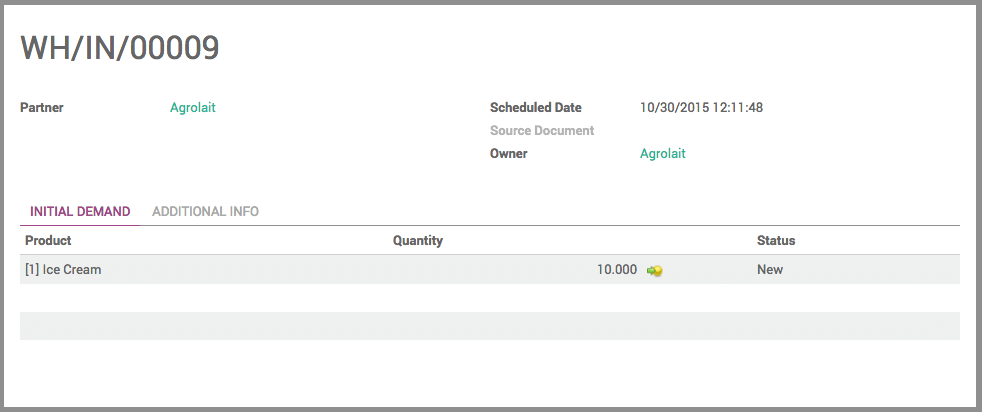

介绍
有些供应商有时候会给你的店铺送来产品但是你又无需采购这些产品：这中情景称之为**代销库存**。
代销库存是工厂和供应商发布新产品的一个很好的方法。因为零售商可能不愿意购买不确定能卖掉的产品，那么代销库存就能让他们可以先不付款就可以针对一款产品在市场上试销。
通过高级设置在YuanCloud可以管理代销库存产品
配置
代开菜单：[UNKNOWN NODE title_reference]，在**产品所有者**部分选择**管理代销产品(高级)**，然后点击**应用**。

代销库存的收货
在库存仪表盘中，打开**收货**仪表盘并创建一个新的收货。你可以在页面的右边，一个新的**所有者**行呈现。你可以指定该批产品的所有者，如果所有者是你，那么就留空。
